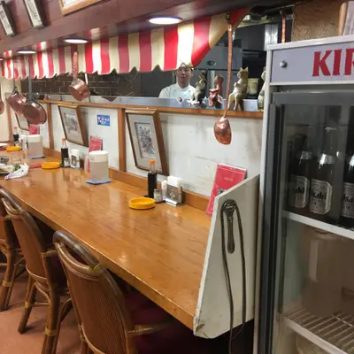

おすすめの飲食店
おぐら
画像出典：安藤 今日子さんの投稿より
宮崎市橘通東にある老舗の洋食店。1956年創業、チキン南蛮にタルタルソースを組み合わせたスタイルの発祥店として知られています。サクサク揚げた鶏肉に甘酢だれと自家製タルタルの相性は抜群。ハンバーグやカレーなど洋食メニューも豊富で、地元のファミリーや観光客から愛され続けています。
画像出典：安藤 今日子さんの投稿より
宮崎市橘通東にある老舗の洋食店。1956年創業、チキン南蛮にタルタルソースを組み合わせたスタイルの発祥店として知られています。サクサク揚げた鶏肉に甘酢だれと自家製タルタルの相性は抜群。ハンバーグやカレーなど洋食メニューも豊富で、地元のファミリーや観光客から愛され続けています。
画像出典：JALが提案する観光ガイドより
宮崎県日向市にある「日向のお伊勢さま」と呼ばれる古社で、皇祖・天照大御神を祀ります。日向岬の付け根・伊勢ヶ浜にあり、背後に柱状節理が広がり、太平洋の大海原を望むダイナミックな景観が魅力です。